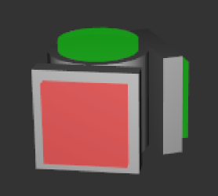
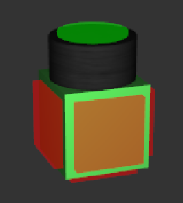

Synthetics
A robotics framework for easily assemble robots out of robotic components and run them in synthetic enviroment. The simulation is based on Polycode (see http://polycode.org).
Introduction
The robots can be easily constructed with predefined components like hubs, motors and sensors. No programming is needed. The "pogramming" is done by construction. The signals flows form the sensor to the actors. The signal bus is the body itself. Even actor may be able to propagate a signal. Sensors only can emit signals. Hubs can propagate and manipulate signals
There will be special hubs like negator, avarage, logarithm and many more to influence the signal flow. Of course there will be a programmable hub as well, most propably I will integrate a Lua interpreter.
Configuration
The configuration file is a simple Lua script. The initial resolution and the build history size can be set. As well all needed components will be loaded by the configuration file.
Predefined Components
There are a set of predefined components. I plan to make every component scriptable with Lua in some later versions.
All connectable faces do have specific colors. Red faces emits signals. Green faces receive signals. Yellow faces can either receive ore emit signals and do have the function of a hub. Last but not least there are black faces which neither emit nor receive signals, they are needed to decouple signal buses.
Passive.Hub

A passive hub forwards every signal to its successors. No signal manipulation is done.
Passive.Wedge
A passive wedge forwards every signal to its successors. No signal manipulation is done.
Active.Servo

A servo reacting on input [0..100] with rotation from -90 degree to 90 degree.
Active.Linear
A linear actuator reacting on input [0..100] with stretching from 0 to 1 unit.
Active.Light
A light reacting on input [0..100] with light intens change. Makes your robot more interessting.
Active.Loudspeaker
A loudspeaker reacting on input [0..100] with changing the volume. Currently only a beeb beeb sound. Actually just for fun becaus I wanted to try out positional sound system :)
Active.Motor
Not yet done.
Sensitive.Potentiometer

A Potentiometer emiting value [0..100] depending on its posistion.
Sensitive.Distance
Not yet done.
Morph.Negator
Not yet done.
Morph.Average
Not yet done.
Morph.Trigger
Not yet done.
Morph.Lua
Not yet done.
Components
Every component specifies its connect faces, event handler and shape. A component consist of parts and every part do have plugs (connecting faces).
Part
A part do have plugs, which define the connectiong faces for the component. The first part is the parent of the others. only the first part can be used to plug into an existing robot. Parts can be connected fix or with a joint. You can apply force and velocity to a joint or just set a given position which the join should hold.
Plug
A plug defines the coordinate of the pluggable faces of a component.
Knob
Active elements like servo, light or linear actuator do have a knob to change the default position while construction
Custom Components
It is possible to implement own components as a shared C++ library as all existing components are as well shared libraries. All used components must be specified in the Resource/synthetics.conf.
Acknowledgements
I'd like to acknowledge the work of the following people or group:
- Polycode - Ivan Safrin (http://polycode.org)
- Lua - Lua.org, PUC-Rio, Brazil (http://lua.org)
License
Synthetics is available under the MIT license.